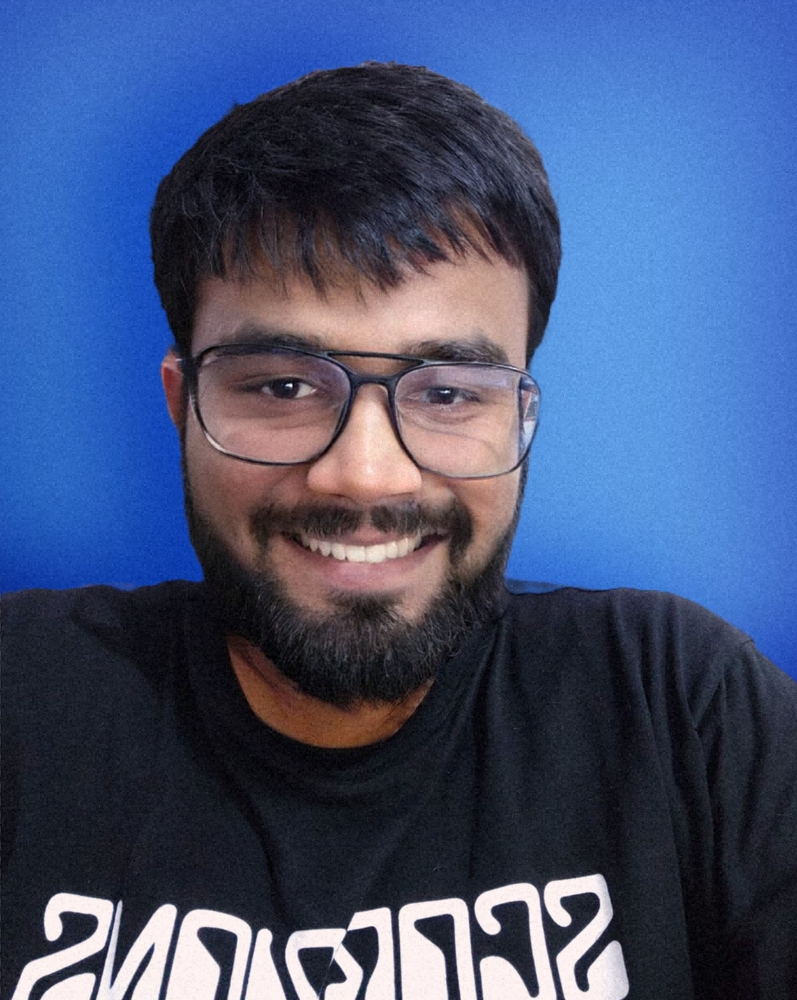

|
Rishav
Hi There!
My name is Rishav (yeah, no surname :-P). I am a recent computer science graduate from BITS Pilani, India.
Academic Interests
During my undergrad years at BITS Pilani, I tried almost everything, from graphic designing to front-end developement to video editing to see what really excites me. The excitement finally came from doing stuff with images, be it as a computer vision researcher or a graphic designer. My long term research goal is to build algorithms that generalize excetionally well to unseen scenarios & are robust to dynamic environment changes. Talking in terms of a specific example, I want to see Autonomous cars on Indian roads ;)
My immediate research goal is to design computer vision algorithms which can cause immediate impact (in medicare, security, logistics, etc.) to make our lives better and safer.
I am also a strong believer in Occam's Razor. I don't like unncessary complexities and believe things are best when kept as natural as possible. I try to emulate this philosophy as much as possible in all aspects of my life.
I completed my bachelor thesis at DFKI Kaiserslautern under Prof. Dr. Didier Stricker. I worked along side René Schuster, Ramy Battrawy and Oliver Wasenmüller. I worked on Deep Learning for Scene Flow Estimation using monocular camera & sparse LiDAR.
CV /
Projects /
Publications /
Activities /
Github+Social /
Blog
Other Interests
While I am not working, I like to read about historical events, specially related to ancient civilizations or listen to music from the 80s (rock) or teach. I also have a huge interest in economics. I consider learning a hobby. All I learnt during these years of education is there is more to learn. I also enjoy watching historical dramas, playing flute (I am not even an amateur) and playing squash and running.
Contact
Email: f2016108p@alumni(.)bits-pilani(.)ac(.)in
Note: Best way to contact me is via twitter.
Latest
|
 |